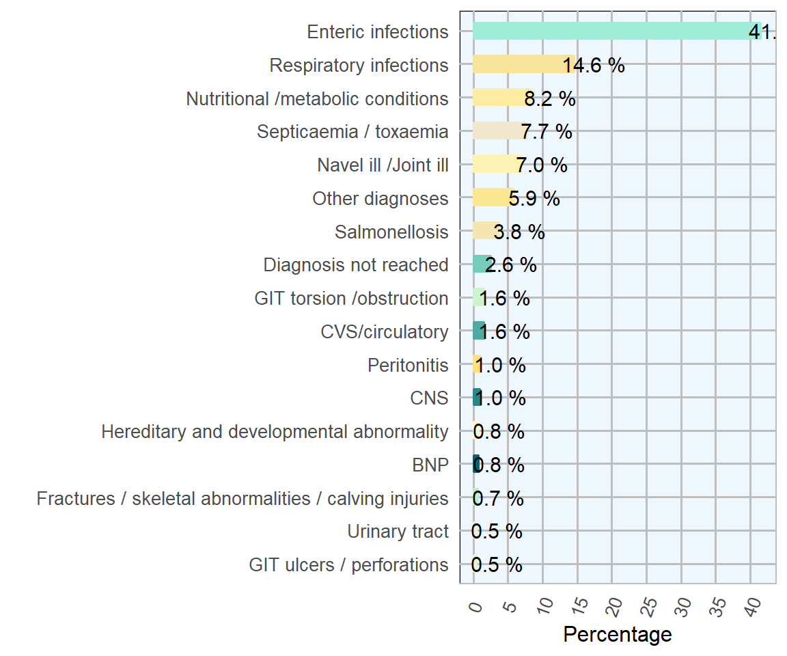
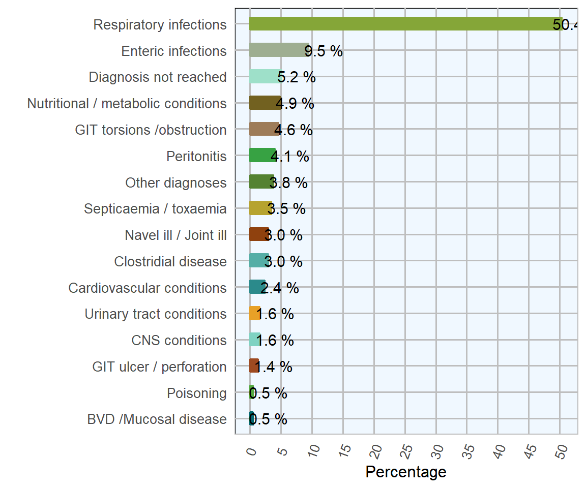
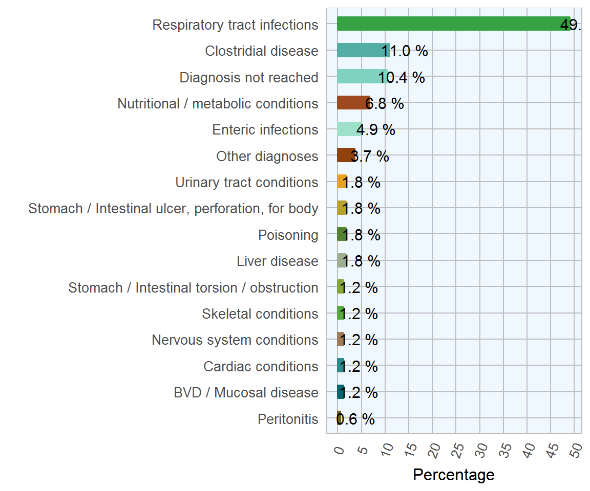
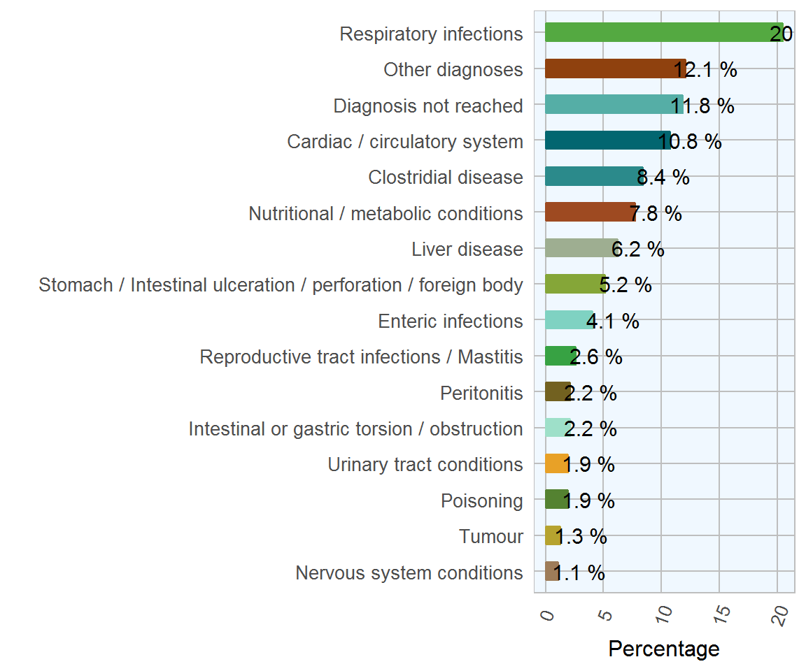

Chapter 2 Cattle Diseases
2.1 Neonatal Calves (0-1 months)
| Category | Count | Percentage |
|---|---|---|
| Enteric infections | 254 | 41.6 |
| Respiratory infections | 89 | 14.6 |
| Nutritional /metabolic conditions | 50 | 8.2 |
| Septicaemia / toxaemia | 47 | 7.7 |
| Navel ill /Joint ill | 43 | 7.0 |
| Other diagnoses | 36 | 5.9 |
| Salmonellosis | 23 | 3.8 |
| Diagnosis not reached | 16 | 2.6 |
| CVS/circulatory | 10 | 1.6 |
| GIT torsion /obstruction | 10 | 1.6 |
| Peritonitis | 6 | 1.0 |
| CNS | 6 | 1.0 |
| BNP | 5 | 0.8 |
| Hereditary and developmental abnormality | 5 | 0.8 |
| Fractures / skeletal abnormalities / calving injuries | 4 | 0.7 |
| Urinary tract | 3 | 0.5 |
| GIT ulcers / perforations | 3 | 0.5 |

Figure 2.1: The conditions most frequently diagnosed on post-mortem examinations of neonatal calves (0-1 months) by AFBI during 2017 (n= 610 )
2.2 Calves (1-5 months)
| Category | Count | Percentage |
|---|---|---|
| Respiratory infections | 186 | 50.4 |
| Enteric infections | 35 | 9.5 |
| Diagnosis not reached | 19 | 5.2 |
| Nutritional / metabolic conditions | 18 | 4.9 |
| GIT torsions /obstruction | 17 | 4.6 |
| Peritonitis | 15 | 4.1 |
| Other diagnoses | 14 | 3.8 |
| Septicaemia / toxaemia | 13 | 3.5 |
| Clostridial disease | 11 | 3.0 |
| Navel ill / Joint ill | 11 | 3.0 |
| Cardiovascular conditions | 9 | 2.4 |
| Urinary tract conditions | 6 | 1.6 |
| CNS conditions | 6 | 1.6 |
| GIT ulcer / perforation | 5 | 1.4 |
| Poisoning | 2 | 0.5 |
| BVD /Mucosal disease | 2 | 0.5 |

Figure 2.2: The conditions most frequently diagnosed on post-mortem examinations of calves (1-5 months) by AFBI during 2017 (n= 369 )
2.3 Calves (6-12 months)
| Category | Count | Percentage |
|---|---|---|
| Respiratory tract infections | 80 | 49.1 |
| Clostridial disease | 18 | 11.0 |
| Diagnosis not reached | 17 | 10.4 |
| Nutritional / metabolic conditions | 11 | 6.8 |
| Enteric infections | 8 | 4.9 |
| Other diagnoses | 6 | 3.7 |
| urinary tract conditions | 3 | 1.8 |
| GIT ulcer, perforation, for body | 3 | 1.8 |
| liver disease | 3 | 1.8 |
| Poisoning | 3 | 1.8 |
| GIT torsion / obstruction | 2 | 1.2 |
| Cardiac conditions | 2 | 1.2 |
| BVD / Mucosal disease | 2 | 1.2 |
| CNS conditions | 2 | 1.2 |
| Skeletal conditions | 2 | 1.2 |
| peritonitis | 1 | 0.6 |

Figure 2.3: The conditions most frequently diagnosed on post-mortem examinations of calves (6-12 months) by AFBI during 2017 (n= 163 )
2.4 Adults (> 12 months)
| Category | Count | Percentage |
|---|---|---|
| Respiratory infections | 95 | 20.5 |
| Other diagnoses | 56 | 12.1 |
| Diagnosis not reached | 55 | 11.8 |
| Cardiac/ circulatory system | 50 | 10.8 |
| Clostridial disease | 39 | 8.4 |
| Nutritional /metabolic conditions | 36 | 7.8 |
| Liver disease | 29 | 6.2 |
| GIT ulceration / perforation / foreign body | 24 | 5.2 |
| Enteric infections | 19 | 4.1 |
| Reproductive tract infections/Mastitis | 12 | 2.6 |
| Intestinal or gastric torsion /obstruction | 10 | 2.2 |
| Peritonitis | 10 | 2.2 |
| Urinary tract conditions | 9 | 1.9 |
| Poisoning | 9 | 1.9 |
| Tumour | 6 | 1.3 |
| CNS infections | 5 | 1.1 |

Figure 2.4: The conditions most frequently diagnosed on post-mortem examinations of adults (>12 months) by AFBI during 2017, (n= 464 )